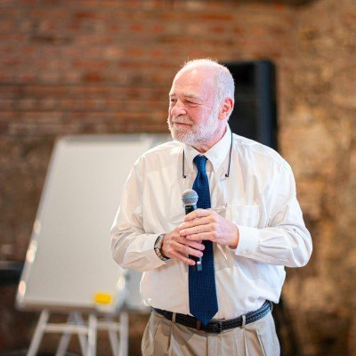
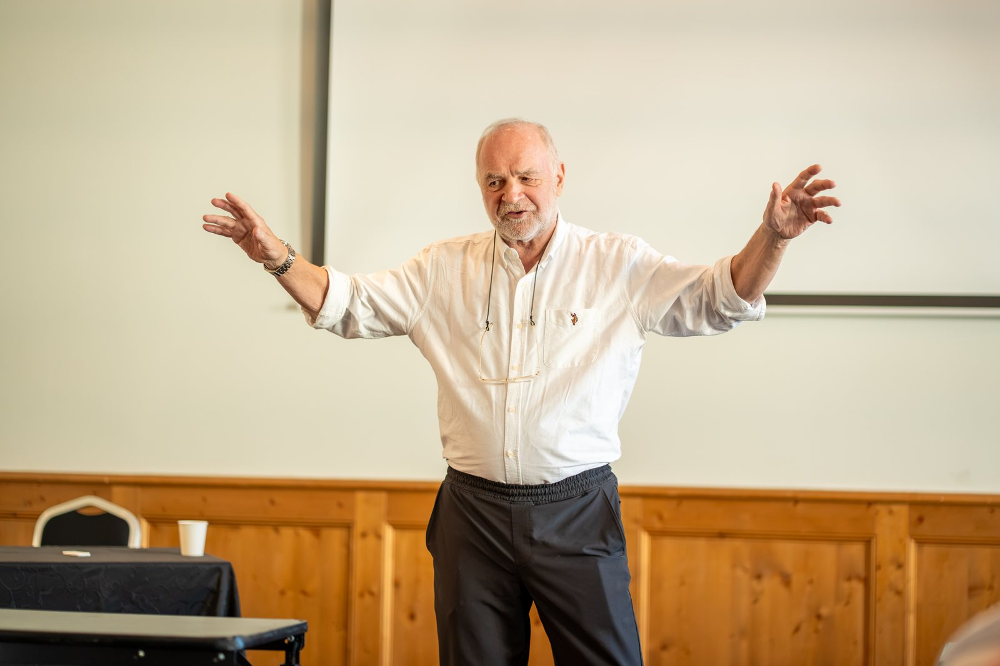

Teacher of the Year, Harvard Kennedy School

For four decades, Steve Jarding has studied, taught, and practiced the art of political communication — advising presidents and prime ministers, shaping winning campaigns across the United States, and teaching the next generation of leaders on six continents.
Steve Jarding is an educator, lecturer, author, and political consultant who has spent his career at the intersection of politics, communication, and leadership. Until his retirement in 2019, he served on the faculty of the John F. Kennedy School of Government at Harvard University, where he had taught since 2004.
His teaching was recognized as exemplary by Kennedy School alumni, and his course on campaign management was twice nominated for the Most Influential Course Award. In 2016, the student body voted him Teacher of the Year. Over years of teaching and training in more than fifty countries, Jarding developed a new paradigm of professional communication — work later recognized in 2022 at the World Government Summit in Dubai, where he led a workshop for nineteen thousand delegates.
Alongside his teaching, Jarding has advised eleven presidents and prime ministers, a Nobel Peace Prize laureate, members of parliament and congress, governors, mayors, and first-time candidates. In the United States, he built a record of winning US Senate and gubernatorial campaigns that earned him recognition by Roll Call as one of the fifty most influential political operators in America. Read the full biography →

Jarding's work rests on a simple conviction: that leaders succeed when they are genuinely understood. Three threads run through everything he does.
Teaching leaders to speak with clarity, empathy, and authenticity — stripping away jargon and spin so that a message actually reaches the people it is meant for. This is the paradigm he refined at Harvard and carried to governments and boardrooms around the world.
Four decades of campaign experience, from the South Dakota plains to national races — with a particular gift for reaching rural and overlooked voters others had written off. Political analyst Charlie Cook once called a Jarding-run campaign the best-run in America.
Helping institutions counter foreign interference and disinformation — from advising groups defending free elections in Eastern Europe and the Caucasus to building programs that expose and counter false narratives on social platforms.
From Creating Giants — a documentary on Steve Jarding's teaching and its impact on his students.
“You are the giants. You are the next generation giants.”
“Steve has changed my life without a doubt. Just being in the same room with him — I feel like I'm learning. He's such a wealth of knowledge.”
Steve Jarding works with governments, candidates, institutions, and universities worldwide. Inquiries are welcome.